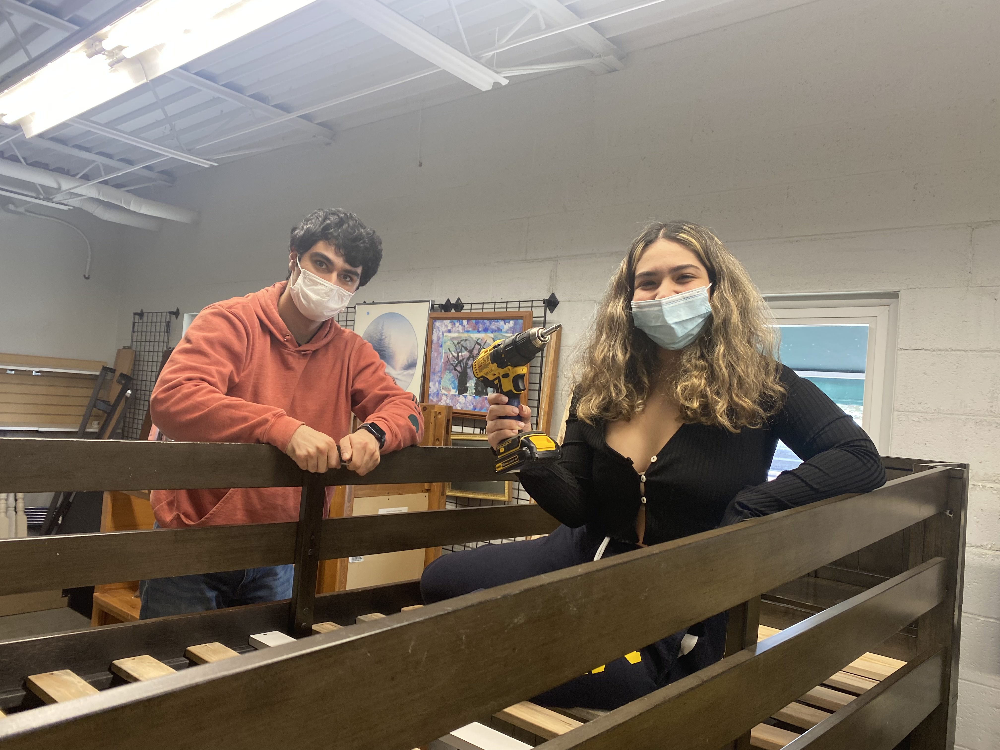
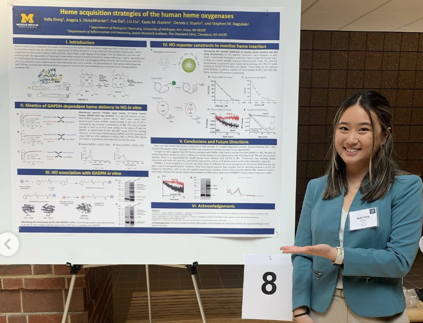
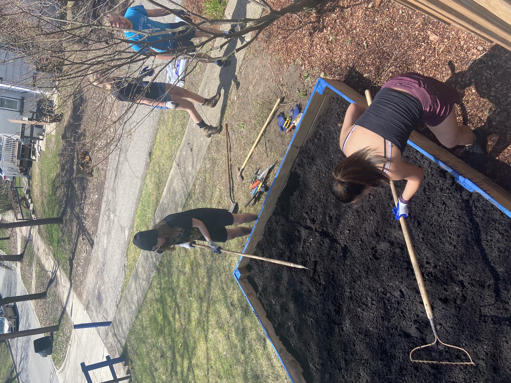

Meet the Executive Board!

Lauren Zielaskowski
President
Hi, my name is Lauren Zielaskowski and I’m the current president of Alpha Chi Sigma at Michigan! I’m a senior double majoring in Biochemistry and Biophysics, and I’m a current undergraduate researcher in the Baldridge Lab in the Medical School. I rushed in Fall of 2021 and am so excited to welcome a new pledge class this semester! I’ve absolutely loved the people, the opportunities, and the experiences this organization has given me and can’t wait to see what the future holds!”

Kelly Deng
Vice President
Hi, I’m Kelly Deng and I’m one of Alpha Chi Sigma’s vice presidents! I’m a junior majoring in biochemistry with a minor in music, and I’m currently doing research in the Ragsdale lab. I rushed during winter ‘21 and we’ve been able to bring back so many traditions since then! I can’t wait to meet our new pc and build on the amazing friendships we have in AXE!
Nate White
Rush Chair
Hey everyone! My name is Nate and I'm the rush chair this semester for Alpha Chi Sigma! That means that I'll be your point of contact for all activities related to rush, like our info sessions, interviews, and socials. I'm a senior double majoring in Chemistry and Informatics, an undergraduate researcher in the Wang lab in the Life Sciences Institute, and might be your section leader for Chem 211 this semester! I rushed in Fall 2021 and my rush/pledge process brought me together with a group of inspiring and exciting people that I'm friends with to this day. Looking forward to getting to know you all!

Ruya Pakkan
Vice President
Hi! My name is Rüya Pakkan and I’m the other vice president for Alpha Chi Sigma! I’m a senior and I’m double majoring in Chemistry and Biophysics. I also work as an undergraduate researcher in the Zimmerman group. I rushed Fall 2021 and I met my best friends through AXE. I loved my pledge semester and pledge class so much, and it’s been so nice seeing our fraternity grow and become more active ever since. I’m very excited to rush our new pledge class this semester and meet all of them!!
Community Outreach Chairs
Community outreach is a very exciting chair position because it allows for Alpha Chi Sigma to give back to the Ann Arbor community and beyond to try to make the world a little better in the different ways we can. To reflect the chemistry that our professional fraternity stands for, we try to do science related events such as supporting children in their scientific curiosity through events like FEMMES and science Olympiad. We also do other events that we feel we can make a difference with, such as Ukrainian English tutoring, helping ill cats, habitat for humanity, and more. Community outreach is always expanding and changing to try to best fit community needs.
Professional Chairs
As a professional fraternity, we help all of our members navigate their academic and professional futures. Through study tables, speaker series, and research presentations by brothers, our members benefit from a support network for their classes, as well as exposure to all the different research going on around campus, both by brothers and professors. And our scope is not limited to the University of Michigan, last year we hosted Dr. Levin from the University of Chicago as part of our Bartell Lecture Series.
Sustainability Chair
As Chemists, we have a unique responsibility to the Earth. The compounds we synthesize, drugs we develop, and chemicals we produce and use have a direct relationship with our environment. However, our Chapter recognizes the importance of doing more for the earth and thus coordinates additional efforts to live sustainably and preserve the planet for future generations of chemists. Our chapter's sustainability efforts are centered on promoting local businesses, recycling, waste reduction, and garden preparation. We visit the Bring Your Own Container store to stock up on household supplies in our own reused container, shop at the Ann Arbor Farmers Market, and collect cans and bottles for recycling. We started garden preparations early by sprouting seeds indoors in repurposed egg cartons, in anticipation of our summer garden. The garden is an excellent way to promote healthy eating habits, save money, and encourage our members to take care of the environment.